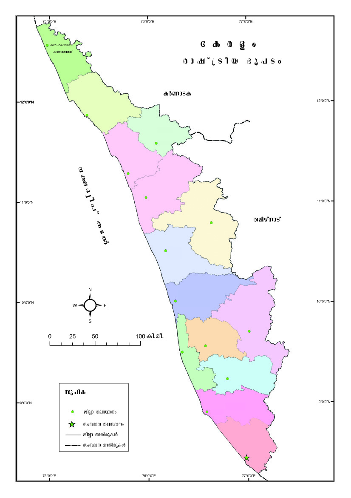
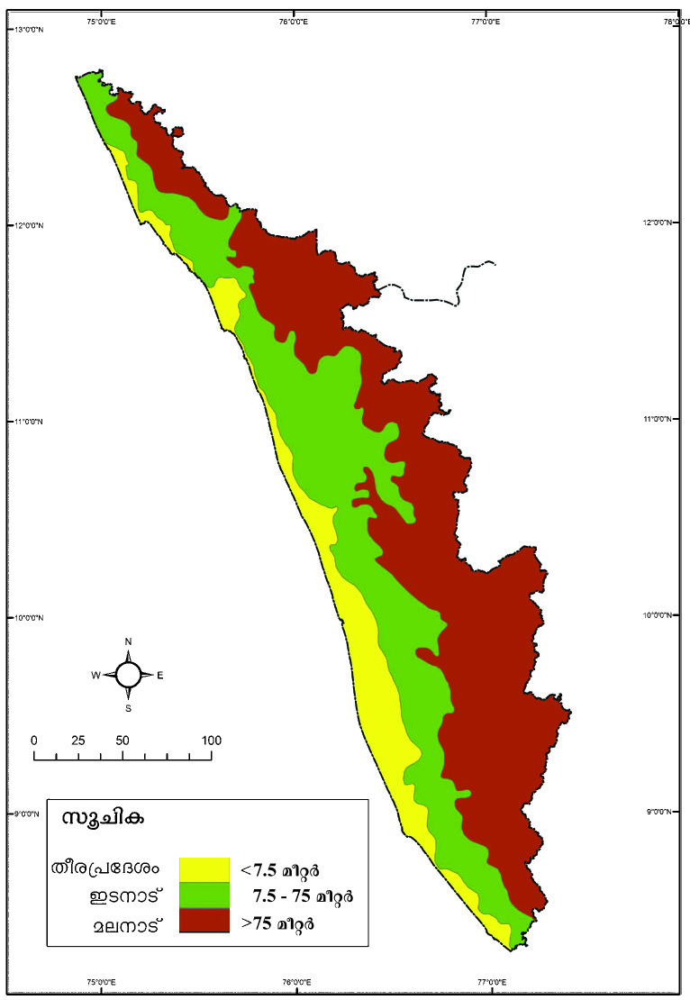
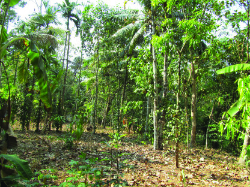
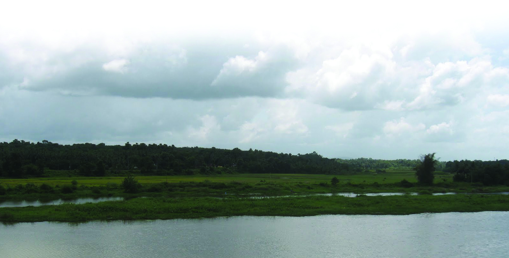
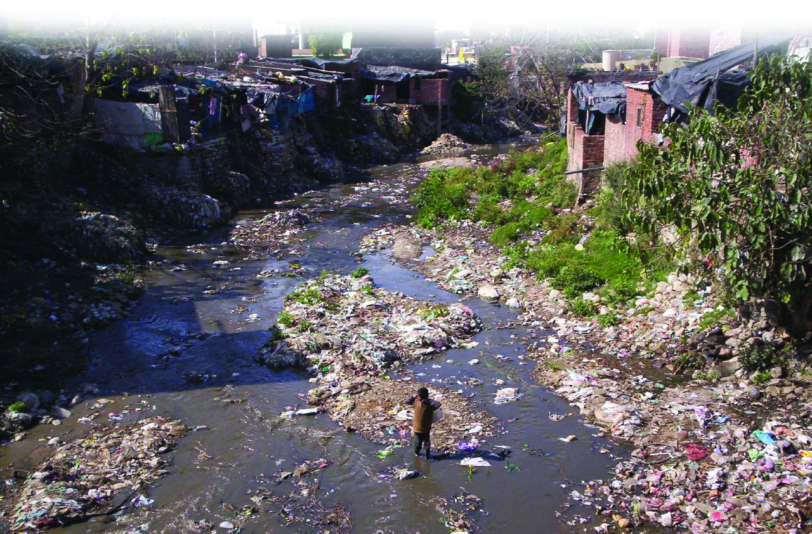
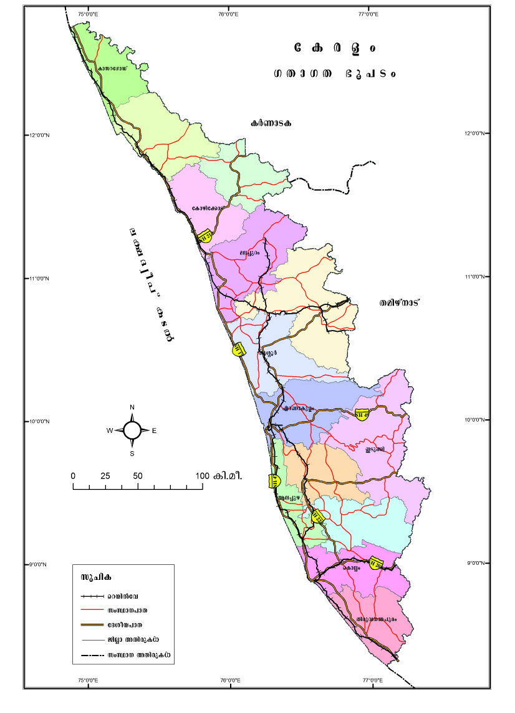

tIcf°c-bn¬
119
119
119
{]IrXnkuμ-cy-Øm¬ A\p-Kr-lo-X-amb \mSmWv tIc-fw. Ip∂p-Ifpw
\Zn-Ifpw Imb-epIfpw IS¬Øo-chpw sshhn-[-y-am¿∂ kky P¥p-
Pm-e-ßfpw anX-amb Imem-h-ÿbpw tIc-f-Øns‚ khn-ti-j-X-IfmWv.
tIc-f-ta, \ns‚tbma-\-t∏¿ tIƒs°
tImƒabn¿ sIm≈p-s∂-∂p≈sa∂pw
\ocmfn∏® hncn® hb-ep-Iƒ
\osf°nS-°p-apƒ \mSp-Ifpw
hmcnfw ]p√-Wn-°p-∂n≥ ]pd-ßfpw
t\c‰ \oc-e¿s∏m-bvI-Ifpw
]qØncn IØn® ]mXn-cmhpw ]ns∂
]qØn-cp-hm-Xnc∏q\n-emhpw
{]ikvX kmln-Xy-Im-c-\mb
{io. Fkv.-sI. s]ms‰-°mSv
tIc-f-sØ-°p-dn®v h¿Æn-®n-cn-
°p-∂Xv t\m°q.
Page 39
Page 40

kmaq-ly-imkv{Xw V
120
120
120
C{Xbpw at\m-l-c-amb \ΩpsS kwÿm-\-sØ-°p-dn®v IqSp-X-e-dn-
tbt≠?
C¥y-bpsS sXt° A‰-Ømbn Ing°v ]›n-a-L-´-Øn\pw ]Sn-™mdv
Ad-_n-°-S-en-\p-an-S-bn¬ ÿnXn sNøp∂ `q{]-tZ-i-amWv tIcf
kwÿm\w.
NphsS tN¿Øn-´p≈ `q]Sw \nco-£n-°q (Nn{Xw˛10.1)
Nn{Xw 10.1
IÆq¿
IÆq¿
tImgnt°mSv
hb\mSv
ae∏pdw
]me°mSv
Xr»q¿
FdWmIpfw
CSp°n
tIm´bw
Be∏pg
I¸dd
tImgnt°mSv
ae∏pdw
Xr»q¿
FdWmIpfw
tIm´bw
Be∏pg
]Ø\wXn´
]Ø\wXn´
sIm√w
sIm√w
Xncph\¥]pcw
Xncph\¥]pcw
]me°mSv
ss]\mhv
Page 41
tIcf°c-bn¬
121
121
121
$
tIc-f-Øns‚ Ab¬ kwÿm-\-߃ GsXm-s°-bmWv?
$
tIc-f-Øn¬ F{X Pn√-I-fp≠v?
$
G‰hpw sNdnb Pn√ GXv?
$
IS¬Øoc-an-√mØ Pn√-Iƒ GsXms°?
$
CXp-t]mse IqSp-X¬ tNmZy-߃ Cu `q]-SsØ ASn-ÿm-\-am°n
Xbm-dm-°q. Hmtcm tNmZy-Øn\pw \n߃ Is≠-Øp∂ DØ-c-߃
t\m´p-_p-°n¬ tcJ-s∏-Sp-Øp-I. Xbm-dm-°nb tNmZy-߃ D]-tbm-Kn®v
¢mkn¬ tNmtZym-Ø-c-∏-b‰v \S-Ømw.
`q{]-IrXn
]Sn-™mdv Ad-_n-°-S-en-t\mSp tN¿∂ aW¬ \nd™ {]tZ-i-ß-fn¬
XpSßn Ip∂p-Ifpw Xmgvhc-Ifpw IS∂v Ing-°≥ AXn¿Øn-bn¬ FØp-
tºm-tg°pw IpXn®p]ms™m-gp-Ip∂ Im´m-dp-Ifpw Dbcw IqSnb
sImSpapSnIfp-apƒs°m-≈p∂ sshhn-[y-am¿∂ `q{]-Ir-Xn-bmWv \ΩpsS
sIm®p tIc-f-Øn-\p-≈-Xv.
kap-{Z-\n-c-∏n¬ \n∂p≈ Db-csØ ASn-ÿm-\-am°n tIc-f-Øns‚ `q{]-
Ir-Xn-sb aq∂m-bn-Xn-cn-°mw.
`q]Sw (Nn{Xw˛10.2) \nco-£n®v tIc-f-Øns‚ `q{]-IrXn hn`m-K-߃
GsX-√m-amWv Fs∂-gpXq.
$
ae-\mSv
$
$
Page 42

kmaq-ly-imkv{Xw V
122
122
122
Nn{Xw 10.2
I¿Wm-SI
Xan-gv\mSv
e £ Zzo ]v I S ¬
In.ao.
tIcfw
`q{]-IrXn
Page 43
tIcf°c-bn¬
123
123
123
ae-\mSv
kap-{Z-\n-c-∏n¬\n∂v GI-tZiw 75 ao‰-dn¬ IqSp-X¬ Db-c-ap≈ {]tZ-i-
amWv ae-\m-Sv. Dbcw IqSnb Ip∂p-Ifpw ae-Ifpsams°-bp≈ Cu `q{]-
IrXn hn`m-K-Øn¬ \n∂mWv \ΩpsS \Zn-I-sf√mw D¤-hn-°p-∂Xv.
Cu `q{]-IrXn hn`m-K-Øns‚ `qcn-`m-Khpw h\-ß-fm-Wv.
klys‚ aSn-bn¬...
sX°v Xan-gv\mSv apX¬ hS°v KpP-dmØv hsc hym]n®p InS-°p∂
]›n-a-L´ ae-\n-c-I-fpsS `mK-amWv tIc-f-Øns‚ ae-\mSv {]tZ-iw.
ISp-h, ]pen, hc-bm-Sv, knwl-hm-e≥ Ipc-ßv F∂n-hbpw cmP-sh-ºme
Dƒs∏sS ]e-Xcw ]mºp-Iƒ, \nc-h-[n-bn\w ]£n-Iƒ, Nn{X-i-e-`-߃
XpS-ßnb A]q¿h-amb Pohn-Ifpw ]›n-a-L-´-Øn-ep-≠v.
ae-ap-g°n thgm-º¬
ae-ap-g°n thgm-º¬
hc-bmSv
hc-bmSv
Page 44


kmaq-ly-imkv{Xw V
124
124
124
Cu´n, AIn¬, Nμ-\w, c‡-
N-μ\w XpS-ßnb ac-ßfpw ]e-
Xcw Hm¿°n-Up-Ifpw \nd-™-
XmWv ]›n-a-L´ taJ-e. Cu
{]tZ-i-Øn\v kly-]¿h-X-\nc
F∂pw t]cp≠v.
]›n-a-L-´-Øn-s‚bpw Ahn-
SsØ Poh-Pm-e-ß-fpsSbpw
Nn{X-߃
C‚¿s\-‰n¬
\n∂pw tiJ-cn®v kmaq-ly-
imkv{X em_nse Iºyq-´-dn¬
Hcp UnPn-‰¬ B¬_w
Xømdm-°q.
CS\mSv
kap-{Z-\n-c-∏n¬ \n∂pw 7.5 ao‰¿
apX¬ 75 ao‰¿ hsc Db-c-ap≈
`q{]-tZ-i-߃ Dƒs∏-Sp-∂-
XmWv CS\m-Sv. sNdnb Ip∂p-
Ifpw Xmgvhc-Ifpw \ZoXS-ß-fp-
sa√mw tN¿∂-XmWv CS-\mSv
taJe.
CS-\m-Sns‚ Ing°pw ]Sn-
™mdpw AXn-cmb `q{]-IrXn
hn`m-K-߃ GsXm-s°-bm-
sW∂v `q]SØn¬\n∂pw
Is≠-Øq.
Xoc-{]-tZiw
kap-{Z-\n-c-∏n¬\n∂pw 7.5 ao‰¿
hsc- Db-cap≈ `mK-amWv Xoc-
{]-tZiw. s]mXpth aW¬
\nd™ `q{]-tZ-i-am-Wn-Xv.
\ni-_vZX-bpsS Xmgvh-c-bn¬...
]me-°mSv
Pn√-bnse
aÆm¿°mSv
Xmeq-°n¬
Dƒs∏-Sp∂
]›n-a-L´
h\-{]-tZ-i-amWv
sske‚ v hmen. Nohn-Sp-Iƒ A]q¿Δ-
am-bXp sIm≠mWv Cu {]tZ-i-Øn\v
"sske‚ v hmen' (\ni-_vZ-Xmgvhc)
F∂
t]cp-h-cm≥
Imc-Ww.
hwi\mi-`o-jWn t\cn-Sp∂ knwl-
hm-e≥ Ipc-ßp-Iƒ Dƒs∏sS \nch[n
kky-P-¥p-Pm-e-ß-fpsS Bhm-k-
tI{μw IqSn-bmWv Cu h\-{]-tZ-iw.
Page 45

tIcf°c-bn¬
125
125
125
Imem-hÿ
anX-amb Imem-h-ÿ-bmWv tIc-f-
Øn¬ \ne-\n-ev°p-∂-Xv. AXn-I-Tn-
\-amb NqtSm XWpt∏m tIc-f-
Øn¬ A\p-`-h-s∏-Sm-Xn-cn-°m≥
{][m\ ImcWw IS-ens‚ kmao-
]y-am-Wv.
sX°p-]-Sn-™m-d≥
a¨kq¨ Ime-Øv tIc-
f-Øn¬ G‰hpw IqSp-X¬
ag- e-`n-°p-∂p. Pq¨ amk-
Øn¬ XpS-ßp∂ Cu ag-
°mew CS-h-∏mXn, Ime-
h¿jw F∂nßs\ Adn-
b-s∏-Sp-∂p.
hS°pIn-g-°≥ a¨kq¨ ag°me-w Xpem-h¿j-sa-∂mWv Adn-b-s∏-
Sp-∂-Xv. sshIp-t∂-c-ß-fnse CSn-tbm-Sp-Iq-Snb ag-bmWv Xpem-h¿j-
Øns‚ {]tXy-I-X.
GsXms° amk-ß-fn-emWv tIc-f-Øn¬ Xpem-h¿jw A\p-
`-h-s∏-Sp-∂Xv?
Unkw-_¿ amk-tØmsS tIc-f-Øn¬ t\cnb XWp∏v A\p--`-h-s∏-Sm≥
XpS-ßp-∂p. s^{_p-hcn a[y-tØmsS th\¬°mew Bcw-`n-°p-Ibmbn.
th\¬°m-eØv Fs¥ms° {]tXy-I-X-I-fmWv \m´n¬ A\p-`-h-s∏-
Sp∂Xv?
$
\Zn-I-fn¬ \oscm-gp°v Ipd-bp-∂p.
$
Page 46

kmaq-ly-imkv{Xw V
126
126
126
\Zn-Iƒ
]›n-a-L-´-Øn¬ \n∂p-¤-hn®v tIc-f-Øn-eqsS Hgp-Ip∂ 44 \Zn-I-fp≠v.
Ch-bn¬ I_-\n, `hm-\n, ]mºm¿ F∂o \Zn-Iƒ Ing-t°m-´m-sWmgp
Ip-∂-Xv. s]cn-bm-dmWv tIc-f-Ønse G‰hpw \ofw IqSnb \Zn.
kmaqly imkv{Xem_nse `q]-S߃ \nco-£n®v NphsS sImSp-Øn-
cn-°p∂ tNmZy-߃°v DØcw Is≠Øp-I.
$
\nß-fpsS Pn√-bn¬°qSn Hgp-Ip∂ \Zn-Iƒ GsXm-s°-bmWv?
$
tIc-f-Ønse \Zn-Iƒ D¤-hn-°p-∂Xv GXv `q{]-IrXn hn`m-K-Øn¬
\n∂mWv?
\Zn-Iƒ sIm≠p≈ {]tbm-P-\-߃ Fgp-Xp-I.
$
IpSn-sh≈w
$
C{X-tbsd {]tbm-P-\-ß-fp≈ \Zn-I-fpsS C∂sØ Ah-ÿtbm?
Nn{Xw {i≤n-°q.
Page 47


tIcf°c-bn¬
127
127
127
tIc-f-Ønse \Zn-Iƒ C∂v aen-\o-I-cW `ojWn t\cn-Sp-I-bmWv.
\nß-fpsS \m´nse \Zn-Iƒ CØcw `oj-Wn-Iƒ t\cn-Sp-∂pt≠m? at‰-
sXms° {]iv\-ß-fmWv \nß-fpsS \m´nse \Zn-Iƒ t\cn-Sp-∂Xv?
$
Ic-bn-Sn-®n¬
$
]p\¿÷\n
Im¬ \q‰m≠p apºv h‰nhc-≠p-t]mb
A´-∏m-Sn-bnse sImSp-ß-c-∏-≈w-]pg
AXns‚ Hgp°v hos≠-Sp-Øp-sIm-≠n-
cn-°p-∂p, Xangv\mSv AXn¿Øn-bnse
s]cp-amƒap-Sn-bn¬ \n∂v D¤hn®v
`hm\n∏pg-bn¬ FØn-t®-cp∂ ]pg-
bmWv sImSp-ß-c-∏≈w ]pg. h\-\-
io-I-c-W-amWv ]pg-bpsS \mi-Øn\v hgn-sX-fn-®-Xv. ag-°p-gn-Iƒ, XS-
b-WIƒ F∂n-h-bpsS \n¿am-Ww, ImSp-sh®p ]nSn-∏n-°¬ XpS-ßnb
{]h¿Ø-\-߃aqew ]pg \oscm-gp°v hos≠-SpØv A´-∏mSn {]tZ-
iØpIqSn ho≠pw HgpIns°m≠n-cn-°p-∂p.
\nß-fpsS \m´nse \Zn-Iƒ t\cn-Sp∂ {]iv\-ß-sf-°p-dn®v At\z-jn®v
Ipdn∏v Xøm-dm°q.
C{X-tbsd \Zn-Iƒ D≠m-bn´pw tIc-f-Øn¬ ]e-bn-S-ß-fnepw
th\¬°m-eØv ISpØ Pe-£maw A\p-`-h-s∏-Sp-∂p. CXv
F¥p-sIm-≠m-bn-cn°mw?
ISent\m-S-v tN¿∂p
ImW-s∏-Sp∂ henb
Pem-i-b-ß-fmWv Imb-ep-
Iƒ. Be-∏pg, tIm´bw,
Fd-Wm-Ipfw Pn√-I-fn-
embn hym]n®p InS-
°p∂ thº-\m´p-Imb¬
tIc-f-Ønse G‰hpw
Imb-ep-Iƒ
Page 48


kmaq-ly-imkv{Xw V
128
128
128
henb Imb-em-Wv. a’y-_-‘-\w, I°-hm-c¬, Ib¿hy-h-km-bw,
hnt\mZ-k-©mcw F∂n-hbv°pth≠n Imb-ep-Iƒ {]tbm-P-\-s∏-Sp-
Øp∂p.
XSmI-߃
Ic-bm¬ Np‰-s∏´ henb Pem-ib-ß-fmWv XSm-I-߃. sIm√w Pn√-
bnse imkvXmw-tIm´ XSm-I-amWv kwÿm-\sØ G‰hpw henb ip≤-
P-e-X-Sm-Iw.
Imb-ep-Ifpw XSm-I-ßfpw H´-\-h[n {]iv\-߃ t\cn-Sp-∂p≠v.
Fs¥-√m-am-Wh?
$
hyh-kmb amen-\y-ßfpsS \nt£]w
$
\Zn-Ifpw Imb-ep-Ifpw XSm-I-ßfpw tIc-fo-b-cpsS Pohn-X-hp-ambn Gsd
_‘-s∏-´n-cn-°p-∂p. Ncn-{X-]-c-ambpw kmwkvIm-cn-I-ambpw {]m[m-\y-
a¿ln°p∂ ]e ÿe-ßfpw \Zn-Xo-c-ß-fn-emWv ÿnXn sNøp-∂Xv.
\ΩpsS \mSns‚ kwkvImchp-ambn Cg-tN¿∂v \n¬°p∂ Cu
Pemib߃ kwc-£n-°-s∏-tS-≠-Xt√?
Irjnbpw P\-Po-hn-Xhpw
tIcfw Hcp Im¿jnI {]m[m-\y-ap≈ kwÿm-\-am-Wv. hf-°q-dp≈ aÆpw
[mcm-f-ambn e`n-°p∂ agbpw tIc-f-Øn¬ Irjn-°-\p-Iq-e-amb kml-
N-cy-samcp-°p-∂p.
Page 49
tIcf°c-bn¬
129
129
129
Xoc-{]-tZ-i-ß-fn¬ sXßv, s\√v XpS-ßnb hnf-I-fmWv apJy-ambpw Irjn-
sN-øp-∂-Xv. Chn-SsØ Imb-ep-Iƒ a’y-Ir-jn°v hym]-I-ambn D]-
tbm-K-s∏-Sp-Øp-∂p.
F∂m¬ CS-\m-´n-se-Øp-tºm-tg°pw sshhn-[y-am¿∂ hnf-Iƒ
Irjn-sN-øp-∂-Xmbn ImWmw. s\√v, sXßv, hmg, tN\, tNºv
F∂nh Iq-SmsX Iap-Iv, d∫¿, ac-®o-\n, Im∏n, Ipcp-ap-fIv XpS-
ßnb hnf-Ifpw Cu taJ-e-bn-ep-≠v.
ae-\m-´n¬ s]mXpth A\p-`-h-s∏-Sp∂ XWp-∏p≈ Imem-hÿ tXbne,
Gew, Ipcp-ap-fIv F∂o hnf-Iƒ°v Gsd A\p-tbm-Py-am-Wv.
tIc-f-Øns‚ tZio-tbm-’-h-amb HmWw Nnß-am-k-Ønse hnf-sh-Sp-
∏-pambn _‘-s∏-´-XmsW∂v \n߃°-dn-bmtam? hnjp-hn\v Im¿jn-I-
^-e-߃ sIm≠v IWn-sbm-cp-°p-∂Xpw ]Øm-ap-Z--b-Øn\v hnf--bn-d-°p-
-∂-Xp-sams° tIc-fob kwkvIm-c-Øn¬ Irjn-bpsS ÿm\w hy‡-
am-°p-∂p.
\ΩpsS Im¿jnIkw-kvIm-chpw hnf-ssh-hn-[yhpw kPo-h-ambn \ne-
\n¿Øn-bm-et√ Cu BtLm-j-߃ A¿∞-]q¿W-am-Iq?
Irjn-bp-ambn _‘-s∏´ ]g-s©m-√p-Iƒ tiJ-cn-°q.
KT-607/4/ Social Sci. - 5 (M), Vol-2
Page 50


kmaq-ly-imkv{Xw V
130
130
130
hnS-]-dbp∂ hnf-ssh-hn[yw
ae-bm-fn-Iƒ C∂v hymh-km-bn-I-{]m-[m-\y-ap≈ d∫¿ XpSßnb hnfIƒ
]cºcmKX hnf-Iƒ°p ]I-c-ambn Irjn sNøp-I-bm-Wv.
Db¿∂ hnZym-`ymkw e`n°p∂-tXmsS tbmKy-X-bv°-\p-k-cn-®p≈
sXmgn¬tXSn t]mIp∂-h-cpsS FÆw IqSp∂p. CXv bphm-°-fn¬ Irjn-
tbm-Sp≈ B`n-ap-Jy-Øn¬ Imcyamb am‰w hcp-Øn-bn-´p≠v. IqSmsX
]c-º-cm-KX hnf-Iƒ Irjn-sNøp-∂-Xn-\p≈ Xm¬]cy-°p-dhpw C∂v
tIc-fØnse Hcp -{]-iv\ambn amdn-bn-´p-ap-≠v. CXn-s\mcp am‰w htc-≠-
X-t√. N¿®-sN-øq.
\nßfpsS ho´n¬ Blmcw D≠m-°m≥ D]-tbm-Kn-°p∂ Im¿jnI
hn`h߃ GsXm-s°-bmWv? Chsb \nß-fpsS \m´n¬ Irjn sNøp-
∂h, adp-\m-´n¬ \n∂pw FØp-∂h F∂n-ßs\ ]´n-I-s∏-Sp-Øq.
Fs‚ Irjn-tØm´w
\nß-fpsS ho´p-]-cn-k-cØpw kvIqƒ ]cn-k-cØpw Irjn sNøq.
ho´n-te-°m-h-iy-ap≈ ]®-°-dn-Iƒ, s\√v F∂nh Irjn sNbvXv Dev]m-
Zn-∏n-°p-∂Xv BÀm-Z-I-c-amb A\p-`-h-am-Wv. CXp-sIm-≠p≈ sa®-ß-
sf-s¥m-s°-bmWv?
$
hnjw ]pc-fmØ ]®-°dnIƒ
$
KXm-KXw
tIcfØn¬ Hmtcm `q{]-IrXn hn`m-K-Øn\pw A\p-tbm-Py-amb KXm-K-
X-am¿K-ß-fmWv cq]-s∏-´n-´p-≈Xv. Imb-ep-Iƒ, XSm-I-߃, \Zo-ap-J-߃
F∂nh \nd™ Xoc-{]-tZ-iØv Pe-K-Xm-K-X-am¿KØn\v Gsd {]m[m-
\yap-≠v. Xncp-h-\-¥--]pcw apX¬ tlmkvZp¿Kvhsc \ofp∂ Pe-]mX
\ap-°p-≠v. a’y-_-‘-\w, KXm-K-Xw,
cmPy-c£ XpSßnbhbv°v {]tbm-P-\-s∏-
Sp∂ Xpd-ap-J-ßfpw hnI-kn-®n-´p≠v.
Imb-ep-Iƒ°p IpdptI ]me-߃ h∂-
tXmsS Xoc-{]-tZ-i-Øp-IqSn sdbn¬∏m-
X-Ifpw tZiob]mX-Ifpw tIcf-
Ønep≠m-bn. CS-\m-´nepw ae-\m-´nepw
tdmUv -K-Xm-K-X-amWv IqSpX-ep-≈Xv.
]›n-a-L-´-Ønse Npc-߃hgn Xangv\m-
Page 51

tIcf°c-bn¬
131
131
131
Nn{Xw 10.3
´n-te°pw I¿Wm-S-I-Øn-te°pw Cu ]mX-Iƒ \ofp∂p. Xncp-h-\-¥-]p-
cw, sIm®n, tImgn-t°mSv F∂o A¥m-cmjv{Shnam-\-Øm-h-f-ß-
fn¬\n∂pw C¥y-bpsS hnhn[ `mK-ß-fn-te°pw \nc-h[n hntZ-i-cm-Py-
ß-fn-te°pw hnam-\-k¿ho-kp-Iƒ D≠v.
`q]Sw 10.3 \nco-£n°q.
IÆq¿
hb\mSv
]me°mSv
tIm´bw
]Ø\wXn´
Page 52

kmaq-ly-imkv{Xw V
132
132
132
$
tIc-f-Øn¬ sdbn¬]mX-Iƒ C√mØ Pn√-Iƒ GsXms°? F¥p-
sIm≠v?
$
tZio-b-]m-X-Iƒ G‰hpw IqSp-X-embn IS-∂p-t]m-Ip∂ `q{]-IrXn
hn`mKw GXv? F¥p-sIm≠v?
ssZh-Øns‚ kz¥w \mSv
lcn-Xm-`-amb ]¿Δ-X-ßfpw ae-Ifpw \nd™ `q{]-Ir-Xn, [mcm-f-ambn
e`n-°p∂ ag, At\Iw \Zn-Iƒ, kpJ-I-c-amb Imem-hÿ, Db¿∂
km£cXbpw kwkvIm-c-hpap≈ P\-X... C{X-tbsd kº∂amb
\ΩpsS tIc-f-Øns‚ sshhn-[yhpw hn`-h-k-ºØpw hcpwXe-ap-d-
bv°mbn ImØp kq£n-t°-≠Xv \mtam-cp-Ø-cp-tSbpw IS-a-bm-Wv.
AXn\pth≠n-bp≈ {]h¿Ø-\-ß-fn¬ \ap°v ]¶m-fn-I-fm-Imw.
{][m\ ]T-\-t\-´-ß-fn¬ s]Sp-∂h
$
tIcfØs‚ ÿm\w, AXn-cp-Iƒ, Pn√-Iƒ F∂nh hni-Zo-I-cn-
°p-∂p.
$
tIc-f-Ønse hnhn[ `q{]-IrXn hn`m-K-߃ hni-Zo-I-cn-°p∂p.
$
]›n-a-L-´-Øns‚ {]m[m\yw hni-I-e\w sNøp-∂p.
$
]›na-L´-Ønse kky, P¥pPme-ß-fpsS B¬_w Xøm-dm-°p-
∂p, hni-Zo-I-cn-°p-∂p.
$
tIc-f-Ønse EXp-°-sf-°p-dn®v \nK-a-\-߃ cq]-s∏-Sp-Øp-∂p.
$
tIc-f-ØneqsS Hgp-Ip∂ \Zn-I-fpsS D¤-h-{]-tZiw Hgp-°n-s‚ KXn
F∂nh Nn{Xo-I-cn-°p-∂p.
$
\Zn-Iƒ t\cn-Sp∂ {]iv\-߃ hniIe\w sNøp-∂p.
kw{Klw
$
C¥y-bpsS sX°p`mKØv Ad-_n-°-Sens‚ Xoc-Øv ÿnXn-
sNøp∂ kwÿm-\-amWv tIc-fw.
$
ae-\m-Sv, CS-\m-Sv, Xoc-{]-tZiw F∂n-ßs\ hyXy-kvX-amb
`q{]IrXnbmWv- tIc-f-Ønep≈Xv.
$
tIc-f-Øn¬ CShn´v A\p-`-h-s∏-Sp∂ ag-°m-ehpw th\¬°m-ehpw
hyXykvX Im¿jn-I-hn-f-Iƒ°v A\p-Iq-e-km-l-N-cysam-cp-°p-∂p.
$
Irjn-bn¬ A[n-jvTn-X-amb Hcp kwkvIm-c-amWv tIc-f-Øn-\p-≈Xv.
Page 53

tIcf°c-bn¬
133
133
133
$
\Zn-Ifpw Imb-ep-Ifpw kwc-£n-°-s∏-tS-≠-Xm-sW∂ aqeyw hnhn[
am¿§ßfneqsS {]I-S-am-°p-∂p.
$
Irjnsb ASn-ÿm-\-am-°n-bmWv tIc-fob kwkvImcw cq]-s∏-´Xv
F∂ \nK-a\w cq]-s∏-Sp-Øp-∂p.
$
`q{]-IrXn {]tXy-I-X-Iƒ°-\p-krX-ambn tIc-f-Øn¬ hnI-kn-®n-
´p≈ hnhn[ KXm-K-X-am¿K-߃ hni-I-e\w sNøp-∂p.
hne-bn-cp-Ømw
1.
"`q{]-Ir-Xn°v A\p-kr-X-amb Im¿jnI-hn-f-I-fmWv tIcf-Øn-\p-
≈Xv'. Cu {]kvXm-h\ icn-h-bv°p∂ DZm-l-c-W-ß-ƒ Is≠Øn
Fgp-Xp-I.
2.
tIc-f-Ønse \Zn-Iƒ \nc-h[n {]iv\-߃ t\cn-Sp-∂p≠v. \nß-
fpsS {]tZ-isØ \Zn-Iƒ t\cn-Sp∂ {]iv\-ß-sf-°p-dn®v Ipdn-∏p -
Xbmdm°q.
3.
tIc-f-Øns‚ Imem-hÿmkhn-ti-j-X-Iƒ Fs¥-√m-amWv?
4.
tIcf-Øns‚ Ing-°≥ta-J-e-bn¬ sdbn¬ KXm-KXw C√m-ØXv
F¥p-sIm-≠m-bn-cn°mw?
XpS¿{]h¿Ø\w
Im¿Uvt_m¿Upw Ifn-aÆpw D]-tbm-Kn®v tIc-f-Øns‚ `q{]-IrXn
amXrI \n¿Ωn-°pI.
Bh-iy-amb km[-\-߃
30 sk.ao. 30 sk.ao. Af-hp-Iƒ D≈ Im¿Uvt_m¿Uv
Ifn-aÆv
s]≥kn¬
hm´¿ If¿
am¿°¿ t]\
30 sk.ao. \ofhpw 30 sk.ao. hoXn-bp-ap≈ Im¿Uvt_m¿Uv IjWw
FSpØv AXn¬ tIc-f-Øns‚ cq]-tcJ hc-bv°p-I. Ifn-aÆv Ipg®v
Cu cq]-tc-J-bn¬ tIc-f-Øns‚ amXrI \n¿Ωn-°p-I. `q{]-IrXn
taJeIƒ AS-bm-f-s∏-SpØn \ndw \¬Ip-I. Xp≠p-I-S-em-kp-I-fn¬
ae\mSv, CS-\mSv, Xoc-{]-tZiw F∂o t]cp-Iƒ am¿°¿ t]\-sIm≠v
Fgp-Xn AXmXv `q{]-Ir-Xn-I-fn-t∑¬ ]Xn-°p-I.